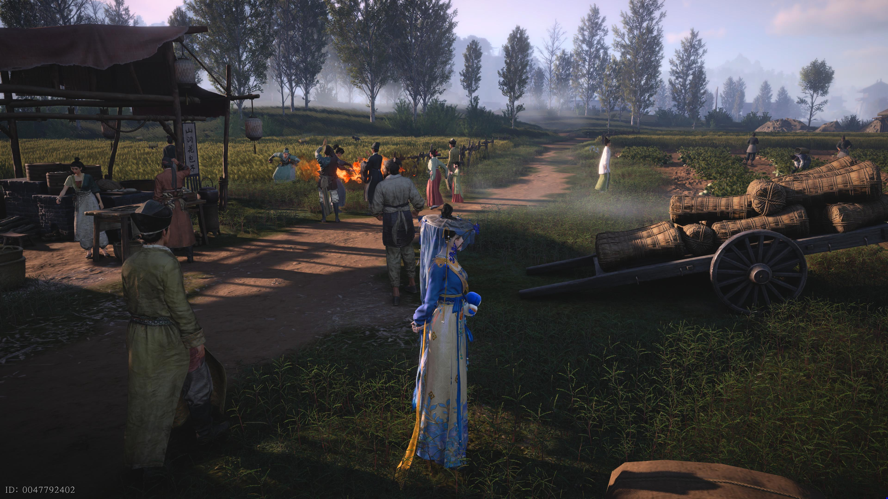
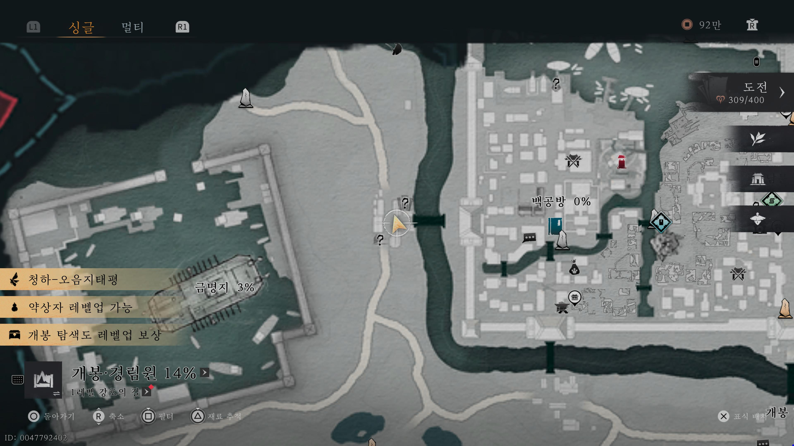
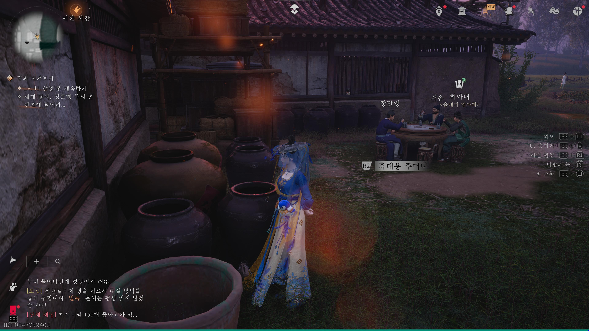
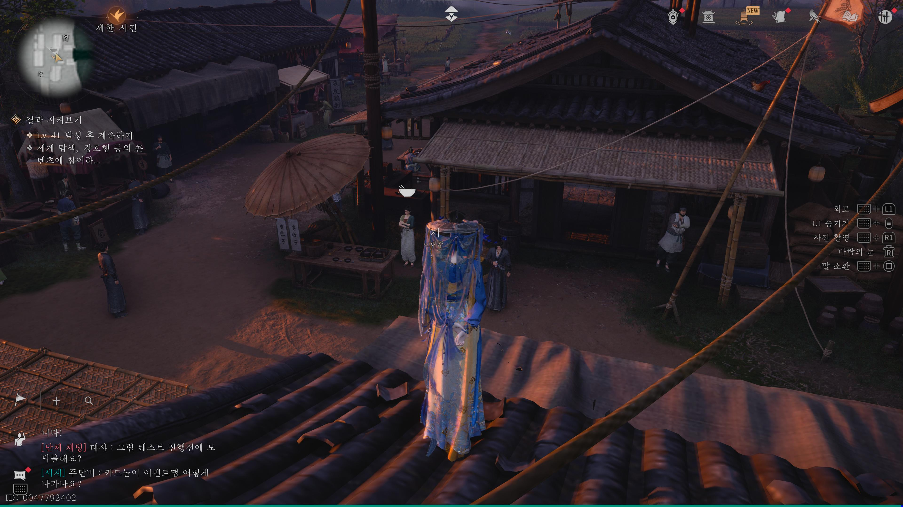

만사록
중요한 물건
뭔가 후회하는 모습을 보이는 장인 노대공을 만나보자
📜 퀘스트 개요
후회하고 있는 장인 노대공을 돕는 의뢰입니다.
잃어버린 흰색 주머니를 찾고, 도둑맞은 도면을 되찾아야 합니다.
장인 노대공의 부탁
아래 위치로 이동하여 노대공과 대화하세요.
그는 잃어버린 흰색 주머니를 찾아달라고 부탁합니다.


흰색 주머니 회수
노대공 바로 옆에 엽자희(카드 놀이)를 즐기는 사람들이 있습니다.
그들 뒤쪽에 있는 항아리를 조사하면 흰색 주머니를 찾을 수 있습니다.

도면 훔치기 (허공섭물)
주머니를 찾은 건물의 위층(지붕)으로 올라가세요.
그곳에 있는 재주꾼 제오에게 허공섭물 스킬을 사용하여 도면을 훔쳐야 합니다.


찾은 주머니와 도면을 노대공에게 돌려주면
장인의 근심이 해결되며
퀘스트는 완료됩니다.